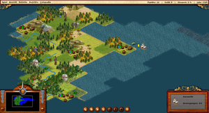

FreeCol
Dieser Artikel wurde für die folgenden Ubuntu-Versionen getestet:
Ubuntu 16.04 Xenial Xerus
Ubuntu 14.04 Trusty Tahr
Zum Verständnis dieses Artikels sind folgende Seiten hilfreich:
FreeCol  ist die Umsetzung des rundenbasierten Strategiespiels Colonization als Open Source Projekt. Sid Meier's Colonization ähnelt stark dem ebenfalls von Sid Meier entwickelten Spiel Civilization, jedoch mit einigen Änderungen. Colonization startet im Jahr 1492 und die Aufgabe besteht darin Amerika zu besiedeln. Der Handel mit Europa sowie die Beziehung zu den Eingeborenen spielen dabei eine entscheidende Rolle. Anders als in Civilization tritt der militärische Aspekt in den Hintergrund.
ist die Umsetzung des rundenbasierten Strategiespiels Colonization als Open Source Projekt. Sid Meier's Colonization ähnelt stark dem ebenfalls von Sid Meier entwickelten Spiel Civilization, jedoch mit einigen Änderungen. Colonization startet im Jahr 1492 und die Aufgabe besteht darin Amerika zu besiedeln. Der Handel mit Europa sowie die Beziehung zu den Eingeborenen spielen dabei eine entscheidende Rolle. Anders als in Civilization tritt der militärische Aspekt in den Hintergrund.
FreeCol ist kein direkter Clon von Colonization. Eine etwas verbesserte Grafik und einige neue Features sind angestrebt (z.B. eine Multiplayer-Option) - das Gameplay und die Regeln sind jedoch identisch mit dem Original.
Voraussetzungen¶
Benötigt wird eine Auflösung von mindestens 1024x768 Pixeln und Java in der Version 1.6.0 oder höher. FreeCol funktioniert sowohl mit der freien Java Variante OpenJDK, als auch mit Oracle Java. Unter Umständen können mit OpenJDK noch kleinere Grafikprobleme auftreten. Ist dies der Fall, kann die Verwendung von Oracle Java in Erwägung gezogen werden.

Installation¶
FreeCol ist über die Paketquellen verfügbar [1]:
freecol (universe)
 mit apturl
mit apturl
Paketliste zum Kopieren:
sudo apt-get install freecol
sudo aptitude install freecol
Anschließend kann das Spiel über das Menü gestartet werden.
Aktuelle Version¶
Eine aktuelle Version lässt sich aus dem Internet herunterladen . Das Spiel ist für Windows, Mac OS X und Linux verfügbar. Für Linux kann man zwischen einem Java-Installer und vorkompilierten Archiven wählen. Zudem besteht die Möglichkeit, den Source-Code mit herunter zu laden.
Hinweis!
Fremdsoftware kann das System gefährden.
Java-Installer¶
Man lädt sich die .jar-Datei von der Download-Seite  herunter und startet den Installer mittels [2]:
herunter und startet den Installer mittels [2]:
java -jar freecol-*-installer.jar
Daraufhin öffnet sich das Installationsprogramm, über das Sprache und Installationspfad ausgewählt werden können. Zusätzlich kann optional das Spielhandbuch installiert, sowie Startmenüeinträge und Desktop-Starter erstellt werden. Anschließend befindet sich ein Eintrag im Menü zum starten des Spiels.
Sofern das Spiel über den Installer installiert wurde, so kann man FreeCol über den entsprechenden Eintrag aus dem Menü oder durch Aufruf [4] der Datei /PFAD/ZUM/SPIEL/Uninstaller/uninstaller deinstallieren.
Zum Spiel¶
Allgemeines¶
Man startet mit einem Schiff, auf dem sich ein Siedler und ein Soldat befinden und sucht auf den Meeren nach Land, um seine Kolonie zu errichten und Amerika zu besiedeln. Der Handel mit Europa ist von entscheidender Bedeutung. Mit den produzierten Gütern ist es möglich neue Siedler anzulocken und seine Siedlungen zu vergrößern. Ein weiterer entscheidender Punkt ist der Handel, um an die benötigten Ressourcen zu gelangen.
Im Spielverlauf muss man sich entscheiden, ob man friedlich mit den Eingeborenen zusammen lebt, um z.B. neue Fertigkeiten und Güter zu erlangen, oder ob man sie angreift und ausraubt. Das Ziel ist die Unabhängigkeit Amerikas zu erlangen und einen Angriff der königlichen Armee zu überstehen.
Bedienung¶
FreeCol ist, wie das Original Colonization, komplett in 2D gehalten und die Sicht ist von schräg oben. Gesteuert wird vorzugsweise mit der Maus.
Eine etwas versteckte Funktion ist der Handel mit Europa. Um ein Schiff zurück nach Europa zu schicken, muss man im Menü den Punkt "Gehe zu" auswählen. Dort kann man seine Heimatstadt anwählen (entsprechend der gewählten Nation) und das Schiff fährt zurück. Alternativ steuert man ein Schiff manuell auf die Grenze zum Ozean. Erreicht das Schiff Europa kann man im Menü unter "Europa" das Schiff Be- und Entladen und wieder auf die Reise zurück in die Neue Welt schicken.
Karteneditor¶
Mit dem Karteneditor können eigene Karten erstellt werden. Dabei können schon existierende Karten importiert und geändert werden, per Zufallsgenerator vorgefertigte Karten erstellt oder komplett leere Karten generiert werden. Bei den ersten beiden Optionen ist es zudem möglich die Kartengröße, Anzahl der Flüsse, Berge usw. zu bestimmen. Auf der erstellten Karte kann anschließend gespielt werden.
Mehrspieler¶
FreeCol bietet neben dem Einzelspielermodus auch einen Mehrspielermodus. Möchte man an einem Mehrspieler-Spiel teilnehmen, muss man die IP-Adresse des Servers und den Port (Standard 3541) eines laufenden Spiels kennen. Startet man ein Mehrspieler-Spiel ist die IP-Adresse die Adresse des eigenen Computers. Lediglich der Port muss angegeben werden und ob es sich um einen öffentlichen oder privaten Server handelt. Mit der Option "Serverlisten abrufen" erhält man alle im Moment laufenden Spiele auf dem Metaserver. Dazu wird eine Verbindung zu meta.freecol.org (Port 3540) aufgebaut. Es erscheint eine Liste der Server, mit denen man sich verbinden kann.
Bei dem Einsatz einer Firewall ist darauf zu achten, dass die jeweilige Verbindung zum Server in den Firewall-Einstellungen erlaubt ist.
Problembehebung¶
Vollbild¶
Sollte es Probleme mit dem Vollbild geben, dann muss das Spiel mit der Option --windowed aufgerufen werden. Dadurch wird der Vollbildmodus ausgeschaltet und das Spiel in einem Fenster gestartet. Der Java-Installer legt hierfür einen Menüeintrag an. Zum Starten des vorkompilierten Programms aus einem der Archive lautet der Befehl beispielhaft:
./freecol --windowed
- Erstellt mit Inyoka
-
 2004 – 2017 ubuntuusers.de • Einige Rechte vorbehalten
2004 – 2017 ubuntuusers.de • Einige Rechte vorbehalten
Lizenz • Kontakt • Datenschutz • Impressum • Serverstatus -
Serverhousing gespendet von